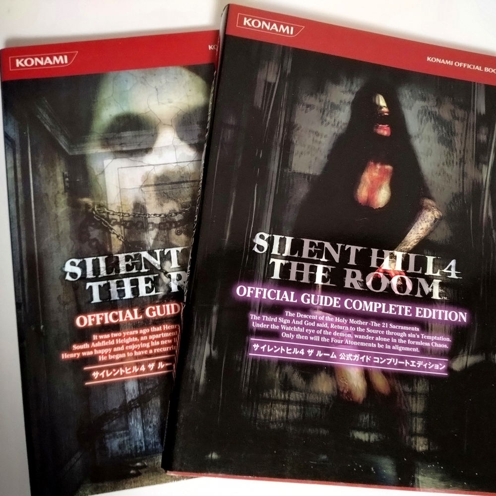
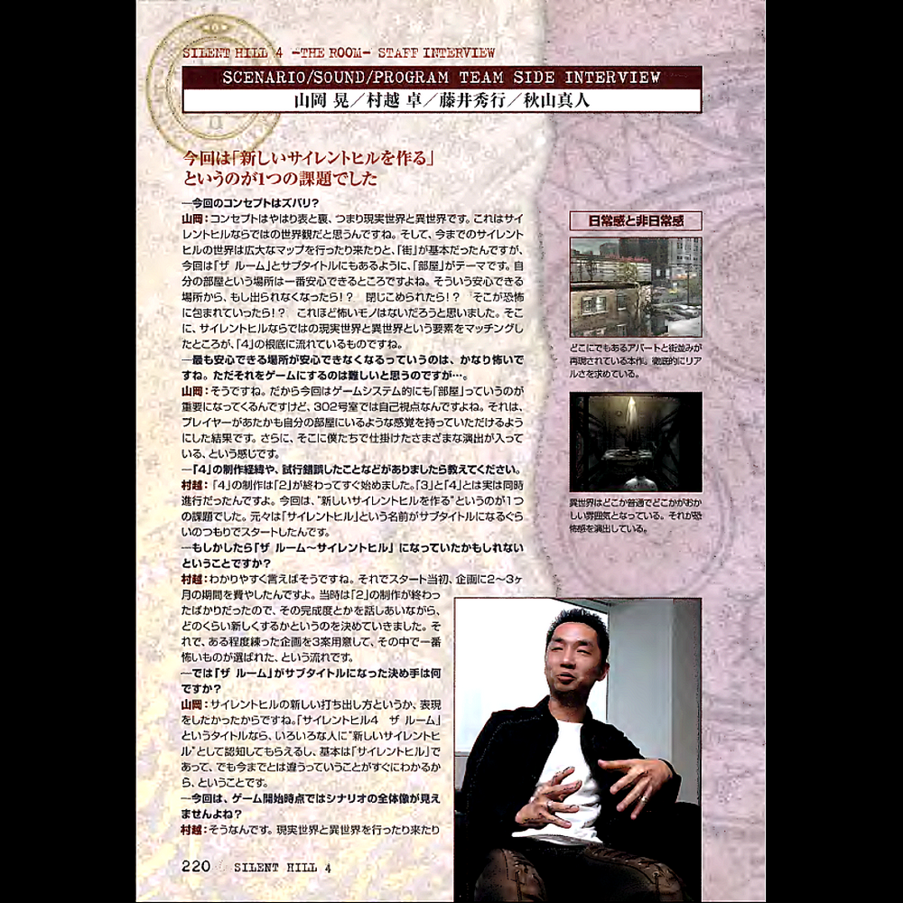
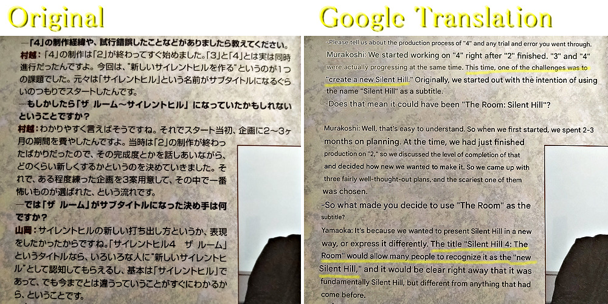
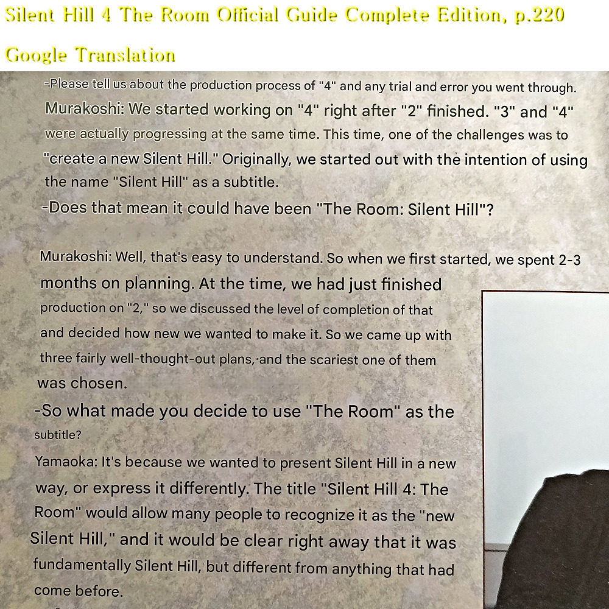

It Could Have Been The Room - Silent Hill (Jk)

📖 Silent Hill 4 The Room Official Guide Complete Edition, p.220
This is a mirror of the DeviantArt version linked above, provided as a backup and for easier access.
I scanned this as well to prove that SH4 was part of the Silent Hill series from the very start, and I'm keeping a record of it here. It mostly matches what was said on the old official website.



Japanese/Original
今回は「新しいサイレントヒルを作る」というのが1つの課題でした
村越：「4」の製作は「2」が終わってすぐ始めました。「3」と「4」は実は同時進行だったんですよ。今回は、"新しいサイレントヒルを作る"というのが1つの課題でした。元々は「サイレントヒル」という名前がサブタイトルになるぐらいのつもりでスタートしたんです。
―もしかしたら「ザ ルーム～サイレントヒル」になっていたかもしれないということですか？
村越：わかりやすく言えばそうですね。それでスタート当初、企画に2～3ヶ月の期間を費やしたんですよ。当時は「2」の製作が終わったばかりだったので、その完成度とかを話しあいながら、どのくらい新しくするかというのを決めていきました。それで、ある程度練った企画を3案用意して、その中で一番怖いのが選ばれた、という流れです。
―では「ザ ルーム」がサブタイトルになった決め手は何ですか？
山岡：サイレントヒルの新しい打ち出し方というか、表現をしたかったからですね。「サイレントヒル4 ザ ルーム」というタイトルなら、いろいろな人に"新しいサイレントヒル"として認知してもらえるし、基本は「サイレントヒル」であって、でも今までとは違うってことがすぐにわかるから、ということです。
English
One of our goals this time was to create a "new Silent Hill."
Murakoshi: We started working on "4"right after finishing "2." In fact, "3" and "4" were actually being developed at the same time. One of our goals this time was to "create a new Silent Hill." Originally, we even thought the word "Silent Hill" might end up as the subtitle.
— So it might have ended up being "The Room - Silent Hill?”
Murakoshi: Basically, yes. In the beginning, we spent about two or three months on the overall concept. We had just finished working on "2," so while talking about how polished that one was, we discussed how far we wanted to go in a new direction. In the end, we created three different proposals, and the scariest one was chosen.
— Then what made you decide on "The Room" as the subtitle?
Yamaoka: We wanted to present Silent Hill in a new way, a new expression of it. With a title like "Silent Hill 4 The Room," people would instantly recognize it as a "new Silent Hill." It's still fundamentally "Silent Hill," but the title tells you right away that it's not the same as before.”